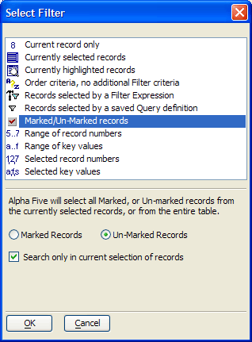
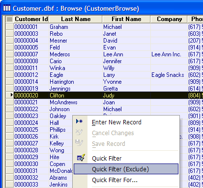

Query Genie
The Query Genie lets you create powerful search and sort operations by navigating through easy-to-understand dialog boxes. The Query Genie is perhaps the easiest way for an inexperienced user to define complex searches of their database. It's also great for ad-hoc queries while viewing records in a form or browse.

You can use the Query Genie to create one-time searches or run saved searches. In addition, the Query Genie lets you perform additive queries. For example, you run a query and are viewing the returned records, and you decide to run another query using the Query Genie. A pop-up menu appears letting you specify whether Alpha Five searches in all available records, or just within the current selection of records.
 Note : The Query
Genie may not display correctly if you make your default font point size too large.
Note : The Query
Genie may not display correctly if you make your default font point size too large.
Procedure
You can access the Query Genie from either a form or browse or from the Query > Query by Genie action script.
Select Query > Query Genie or click
 on the toolbar.
on the toolbar.Select a field from the list at the left side of the screen.
Select an operator from the list in the middle of the screen.
Enter or select appropriate values in the fields at the right side of the screen.
Optionally click Add Condition.
Select one of the two radio buttons to determine whether both conditions must be true ( AND this condition ) or either may be true ( OR this condition ).
If you added a condition in step 5, repeat steps 2 through 4, otherwise continue with step 8.
Optionally check the Exclude records that satisfy this condition check box to invert the logic of the condition.
Click the Order By tab.
Optionally, select a field from the Sort by list to be the basis of the primary sort.
Optionally, click A...Z to sort in descending order.
Optionally, select a field from the first then, sort by list to be the basis of the secondary sort.
Optionally, click A...Z to sort in descending order.
Optionally, select a field from the second then, sort by list to be the basis of the tertiary sort.
Optionally, click A...Z to sort in descending order.
Display the Query Options tab.
Optionally, check the Exclude records that satisfy search criteria to invert the logic of the query.
Optionally, check Unique records only to eliminate duplicate records.
Optionally, limit the records you retrieve by using a function in the <span class=Control>Sub-select Options</span> list.
If required, enter the value of N.
Click Run Query to filter and sort the records visible in your layout.
Click Close to exit from the Query Genie.
Click
 to roll up the Query Genie.
to roll up the Query Genie.Click
 to display the Filter/Order Expressions
dialog box, which show Xbasic filter and order expressions you created
in the Query Genie. This is an excellent way
to learn or copy the syntax for creating filter and order expressions.
to display the Filter/Order Expressions
dialog box, which show Xbasic filter and order expressions you created
in the Query Genie. This is an excellent way
to learn or copy the syntax for creating filter and order expressions.Click
 to switch from Genie Mode to Expression Mode. If you save the filter as an
expression, you can no longer edit it using the Query
Genie. Advanced users can use Expression Mode
to type in additional filter and order expressions.
to switch from Genie Mode to Expression Mode. If you save the filter as an
expression, you can no longer edit it using the Query
Genie. Advanced users can use Expression Mode
to type in additional filter and order expressions.Click
 to save the query for later re-use.
to save the query for later re-use.Click
 to save the query with a new name.
to save the query with a new name.Click
 to load a previously saved query.
to load a previously saved query.Click
 to load create a new query.
to load create a new query.
Eliminating Marked Records from a Selection with a Filter
Assuming that you have a browse view of your records.
Use a query to select records.
For each record you want to exclude from the selection:
Select its row.
Select Records > Mark (or CTRL M).
Select Query > Special Queries... .
Choose "Marked/Un-Marked records" in the list.
Select the Un-Marked Records radio button.
Check Search only in current selection of records.
Click OK.

Eliminating Marked Records from a Selection with Quick Filter (Exclude)
Assuming that you have a browse view of your records.
Use a query to select records.
For each record you want to exclude from the selection:
Select its row.
Right click on the browse and select Quick Filter (Exclude).

See Also
Query Builder, Query by Expression, Query by Form, Query Operations, Query Functions and Methods